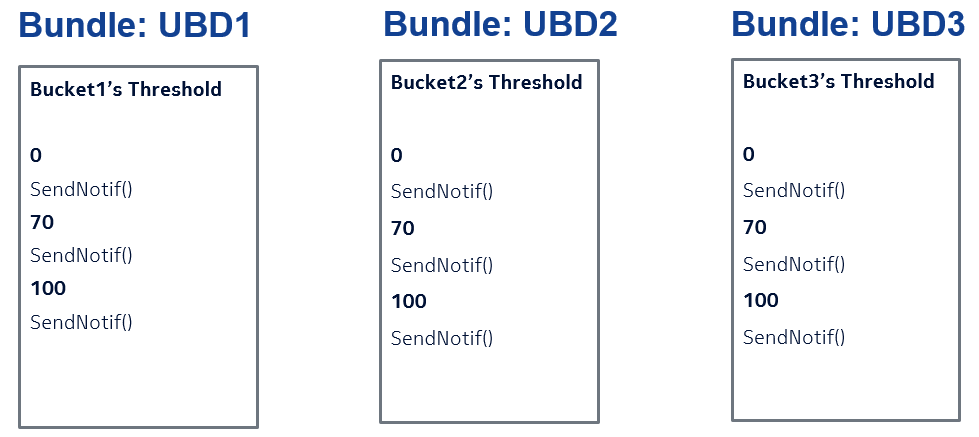
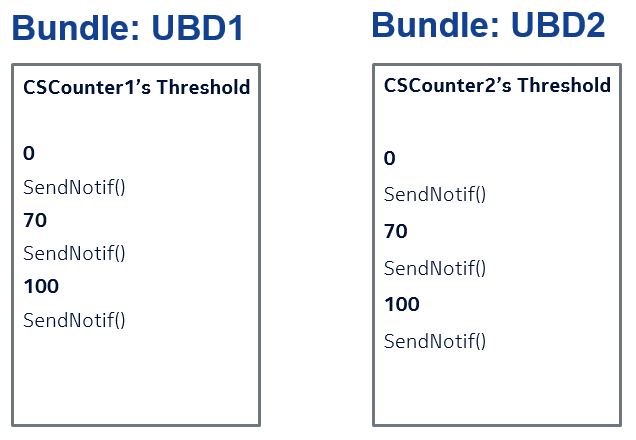
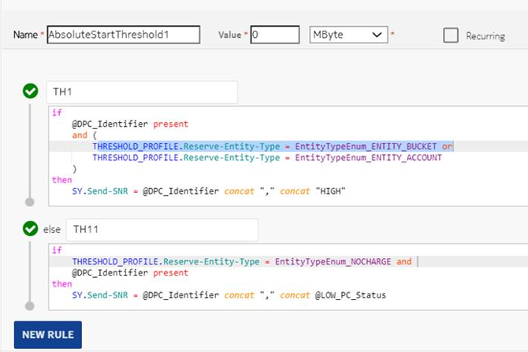
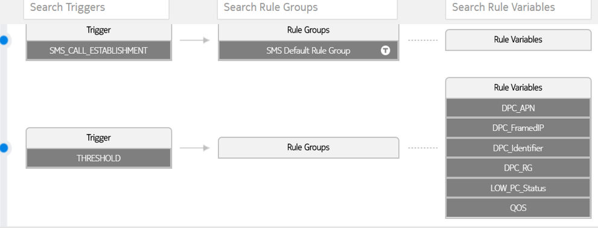
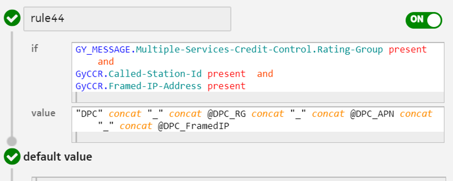
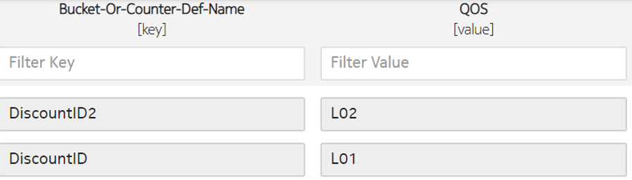
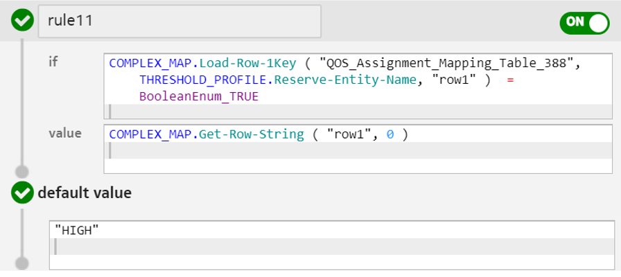
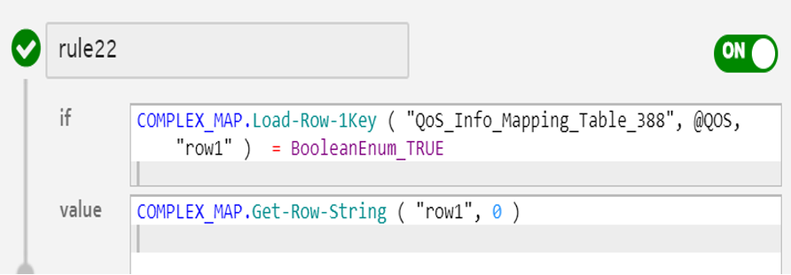
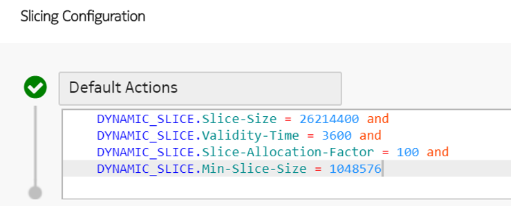
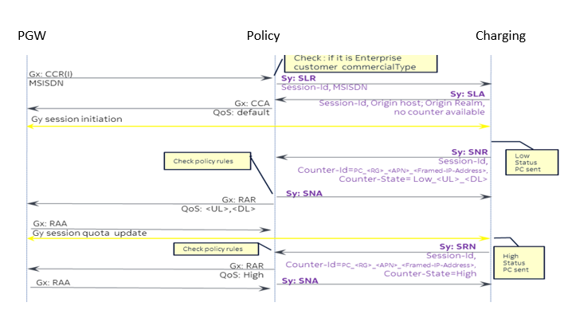

This feature enables the use of Diameter Sy interface to transfer Quality of Service (QoS) information by using the dynamic value of policy counter identifier (such as, PC_<RG>_<APN>_<Framed-IP-Address>).
The dynamic value of policy counter identifier can be determined by the dynamic values of specific parameters received in the Gy CCR request. For example:
-
<RG>- Rating Group
-
<APN>- Access Point Name retrieved from the Called-Station-Id AVP
-
<Framed-IP-Address>- which is retrieved from the Framed-IP-Address AVP and it can either be an IPv4 or IPv6 address
The policy counter status can be HIGH or LOW depending on the bucket or counter from which reservation is done.
 Note:
Note:Resource-based counter enhancement
For a resource-based counter, the SNR is sent based on the resource used for maximum reservation. Threshold is applied with configuration Absolute From Start and value 0 to process the Counter Signalling State in every reservation.
Following are the context variables added to resource-based counters to determine the states based on the given configurations:
| Name of context variable | Description |
|---|---|
| Reserve-Entity-Name | Name of the entity (which can be BucketDef Id, CounterDef Id, or AccountId) from which the maximum reservation has taken place. |
| Reserve-Entity-Type | Type of entity (ENTITY_BUCKET, ENTITY_ACCOUNT, or NOCHARGE) from which the maximum reservation has taken place. |
Recommended configuration for this feature
Configure the following ME application preferences to enable this feature:
-
Set Virtual Policy Counter Support to BUCKET_COUNTER.
-
Set Default Signalling State Value to HIGH.
-
Set Dynamic Policy Counter Identifier to ENABLED.
If the Dynamic Policy Counter Identifier is set as ENABLED, then an Sy session is created without any policy counter information as the Dynamic Policy Counter Name is not available at the time of Sy session creation.
-
NCC does not send policy counter information in SLA and instead sends the following error code 4241, which states Sy Experimental-Result-Code = DIAMETER_ERROR_NO_AVAILABLE_POLICY_COUNTERS.
-
In case of SLR intermediate call, NCC sends an error code 4241, which states Sy Experimental-Result-Code = DIAMETER_ERROR_NO_AVAILABLE_POLICY_COUNTERS.
-
Note:Once, the Gy session is established and first quota is granted, NCC sends an SNR only for low QoS scenarios. In case of high QoS scenario, NCC does not send an SNR as default QoS applied at the beginning of the session is also high QoS.
The default signalling state is derived from the Default Signalling State Value in the system property and it is set to HIGH for dynamic policy counter.
- For first call, when policy counter state is HIGH but not already present in the database, NCC saves the dynamic policy counter with default signalling state set as HIGH and does not send out any SNR.
- For first call, when policy counter state is LOW but not already present in the database, NCC saves the dynamic policy counter with signalling state as LOW and also sends out an SNR.
- For subsequent calls, when policy counter state is different from the previous SNR state sent out, then NCC sends out a new SNR and saves the policy counter state in database.
- For subsequent calls, when policy counter state is same as the previous SNR state, no changes are performed and no SNR is sent out.
- In case of subscription renewal through lifecycle, the buckets and counter gets reset. SNR is not sent at the time of subscription renewal as there is no corresponding Gy request that defines the parameters of the dynamic policy counter name.
Follow this recommended configuration to understand the working of this feature:
-
Create three bundles; UBD1, UBD2, and UBD3.
- Each bundle has two charging services, one for bucket consumption and the other one for non-policy counter consumption, such as:
-
-
For bundle UBD1:
-
CSBucket1 with tariff as Rating.Bucket-Selection = "Bucket1".
-
CSCounter1 with tariff as
RATING.Counter-Selection = “CSCounter1" and
RATING.No-Charge
-
-
For bundle UBD2:
-
CSBucket2 with tariff as Rating.Bucket-Selection = "Bucket2".
-
CSCounter2 with tariff as
RATING.Counter-Selection = “CSCounter2" and
RATING.No-Charge
-
-
For bundle UBD3:
-
CSBucket3 with tariff as Rating.Bucket-Selection = "Bucket3", and no charging service for counter consumption.
-
-
-
Configure the following thresholds to send notification at a required time frame or data consumption:
  -
Configure the threshold to send QoS notification through Sy interface by sending the dynamic policy counter ID and status at the time of reservation.
The following figure states an example of configuring threshold on a resource-based device counter:
Here, the Reserve-Entity-Type describes the type of entity from which maximum reservation has taken place, and this can have one of the 3 values; ENTITY_BUCKET, ENTITY_ACCOUNT, or NOCHARGE.
As shown in the figure below, the following rule variables are created under THRESHOLD trigger from respective parameters of Gy CCR request:
Create the DPC_Identifier by concatenating the DPC_APN, DPC_FramedIP, and DPC_RG:
 -
Configure the complex map as LOW for policy counter status:
QoS variable:
The LOW PC status can be send using the QoS variable:
 -
(Optional) Configure the following quota management (slicing profile) configuration:

Examples
Consider the following example for a better understanding of this feature:
Example 1: Subscriber, which is already at a LOW state at the beginning of the data session switches to high QoS during a data session
Call processing:
-
After recieving SLR, NCC does not send any policy counter information in SLA and instead, it sends the error code 4241, which states Sy Experimental-Result-Code = DIAMETER_ERROR_NO_AVAILABLE_POLICY_COUNTERS.
-
The LOW PC status is send out in the SNR at the initiation of session.
-
Suppose a bundle renewal takes place and the bucket entity is again reinstated and data consumption can again be initiated from bucket as bucket has sufficient balance.

Result:
Verify that NCC sends out an SNR stating with status as HIGH after the bucket balance is refilled and the data session continues with reserving data from bucket balance.